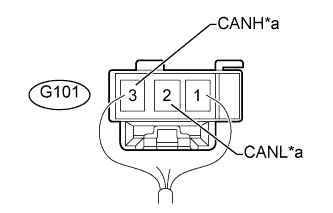
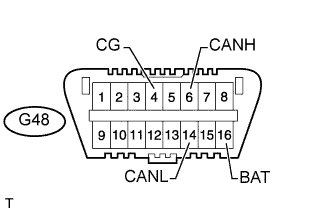
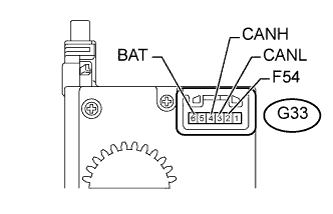

СИСТЕМА ПЕРЕДАЧИ ДАННЫХ CAN (для моделей с правосторонним рулевым управлением без системы посадки и запуска) > КОНТАКТЫ ЭБУ |
| ОТСОЕДИНИТЕ ПРОВОД ОТ ОТРИЦАТЕЛЬНОГО ВЫВОДА АККУМУЛЯТОРНОЙ БАТАРЕИ |
Отсоедините провод от отрицательного (-) вывода аккумуляторной батареи перед измерением сопротивления главной и вспомогательной шин.
| РАЗЪЕМ РАСПРЕДЕЛИТЕЛЬНОГО БЛОКА |
РАЗЪЕМ РАСПРЕДЕЛИТЕЛЬНОГО БЛОКА № 1
| *a | для распределительного блока № 2 | *b | для щитка приборов |
| *c | для блока управления рабочими цилиндрами тормозов (ЭБУ системы противоскольжения) | - | - |
| Разъем распределительного блока № 1 | Цвет проводки | Куда подсоединить |
| A72-9 (CANH) | B | Разъем распределительного блока № 2 |
| A72-20 (CANL) | W | |
| A72-10 (CANH) | LG | Щиток приборов в сборе |
| A72-21 (CANL) | W | |
| A72-11 (CANH) | R | Блок управления рабочими цилиндрами тормозов в сборе (ЭБУ системы противоскольжения) |
| A72-22 (CANL) | W |
РАЗЪЕМ РАСПРЕДЕЛИТЕЛЬНОГО БЛОКА № 2
| *a | для распределительного блока № 3 | *b | для главного ЭБУ кузова (бортового ЭБУ сети мультиплексной связи) |
| *c | для DLC3 | *d | для центрального блока управления системы SRS |
| *e | для витого кабеля (датчика угла поворота рулевого колеса) [для моделей с системой курсовой устойчивости с вакуумным усилителем тормозной системы] | *f | для распределительного блока № 1 |
| *g | для дисплея модуля системы навигации и индикации (AVN) (для моделей с системой навигации) | - | - |
| Разъем распределительного блока № 2 | Цвет проводки | Куда подсоединить |
| G132-1 (CANH) | GR | Разъем распределительного блока № 3 |
| G132-12 (CANL) | W | |
| G132-2 (CANH) | L | Главный ЭБУ кузова (бортовой ЭБУ сети мультиплексной связи) |
| G132-13 (CANL) | W | |
| G132-4 (CANH) | R | DLC3 |
| G132-15 (CANL) | W | |
| G132-5 (CANH) | Y | Центральный блок управления системы SRS |
| G132-16 (CANL) | W | |
| G132-7 (CANH) | G | Витой кабель в сборе (датчик угла поворота рулевого колеса)*1 |
| G132-18 (CANL) | W | |
| G132-8 (CANH) | B | Разъем распределительного блока № 1 |
| G132-19 (CANL) | W | |
| G132-9 (CANH) | P | Дисплей модуля системы навигации и индикации (AVN)*2 |
| G132-20 (CANL) | W |
РАЗЪЕМ РАСПРЕДЕЛИТЕЛЬНОГО БЛОКА № 3
| *a | для распределительного блока № 2 | *b | для ECM (для моделей с 2TR-FE) или распределительного блока № 4 (для моделей с 5L-E) |
| *c | для ЭБУ полного привода | *d | для блока управления системой кондиционирования |
| *e | для ЭБУ рулевого управления с усилителем (для моделей с 2TR-FE) | *f | для датчика рысканья |
| Разъем распределительного блока № 3 | Цвет проводки | Куда подсоединить |
| G134-1 (CANH) | GR | Разъем распределительного блока № 2 |
| G134-12 (CANL) | W | |
| G134-2 (CANH) | LG | ECM*1 или распределительный блок № 4*2 |
| G134-13 (CANL) | W | |
| G134-3 (CANH) | G | ЭБУ полного привода |
| G134-14 (CANL) | W | |
| G134-4 (CANH) | BR | Блок управления системой кондиционирования в сборе |
| G134-15 (CANL) | W | |
| G134-5 (CANH) | L | ЭБУ рулевого управления с усилителем*1 |
| G134-16 (CANL) | W | |
| G134-8 (CANH) | R | Датчик рысканья в сборе |
| G134-19 (CANL) | W |
|  |
РАЗЪЕМ РАСПРЕДЕЛИТЕЛЬНОГО БЛОКА № 4 (для моделей с 5L-E)
| *a | для распределительного блока № 3 |
| Разъем распределительного блока № 4 | Цвет проводки | Куда подсоединить |
| G101-2 (CANL) | W | Разъем распределительного блока № 3 |
| G101-3 (CANH) | LG |
| ПРОВЕРЬТЕ DLC3 |
Отсоедините провод от отрицательного (-) вывода аккумуляторной батареи перед измерением сопротивления главной и вспомогательной шин.
|  |
Измерьте сопротивление в соответствии со значениями, приведенными в таблице.
| Номера контактов (обозначения) | Цвет проводки | Положение переключателя | Заданные условия |
| G48-6 (CANH) - G48-14 (CANL) | R - W | Зажигание выключено | 54-69 Ом |
| G48-6 (CANH) - G48-4 (CG) | R - W-B | Зажигание выключено | 200 Ом или более |
| G48-14 (CANL) - G48-4 (CG) | W - W-B | Зажигание выключено | 200 Ом или более |
| G48-6 (CANH) - G48-16 (BAT) | R - GR | Зажигание выключено | 6 кОм или более |
| G48-14 (CANL) - G48-16 (BAT) | W - GR | Зажигание выключено | 6 кОм или более |
| ПРОВЕРЬТЕ ECM (для моделей с 2TR-FE) |
Отсоедините разъемы G59, G60 и C64 блока ECM.
Измерьте сопротивление в соответствии со значениями, приведенными в таблице ниже.
| Номера контактов (обозначения) | Цвет проводки | Положение переключателя | Заданные условия |
| G60-34 (CANH) - G60-33 (CANL) | LG - W | Зажигание выключено | 108-132 Ом |
| G60-34 (CANH) - C64-5 (E1) | LG - BR | Зажигание выключено | 200 Ом или более |
| G60-33 (CANL) - C64-5 (E1) | W - BR | Зажигание выключено | 200 Ом или более |
| G60-34 (CANH) -G59-17 (BATT) | LG - L | Зажигание выключено | 6 кОм или более |
| G60-33 (CANL) - G59-17 (BATT) | W-L | Зажигание выключено | 6 кОм или более |
| ПРОВЕРЬТЕ РАСПРЕДЕЛИТЕЛЬНЫЙ БЛОК СО СТОРОНЫ ВОДИТЕЛЯ, ГЛАВНЫЙ ЭБУ КУЗОВА (БОРТОВОЙ ЭБУ СЕТИ МУЛЬТИПЛЕКСНОЙ СВЯЗИ) |
Снимите главный ЭБУ кузова (бортовой ЭБУ сети мультиплексной связи) (Нажмите здесь).
Измерьте сопротивление в соответствии со значениями, приведенными в таблице ниже.
| Номера контактов (обозначения) | Цвет проводки | Положение переключателя | Заданные условия |
| G64-14 (CANH) - G64-13 (CANL) | L - W | Зажигание выключено | 54-69 Ом |
| G64-14 (CANH) - A-11 (GND1) | L - нет | Зажигание выключено | 200 Ом или более |
| G64-13 (CANL) - A-11 (GND1) | W - нет | Зажигание выключено | 200 Ом или более |
| G64-14 (CANH) - A-30 (BECU) | L - нет | Зажигание выключено | 6 кОм или более |
| G64-13 (CANL) - A-30 (BECU) | W - нет | Зажигание выключено | 6 кОм или более |
| ПРОВЕРЬТЕ ЩИТОК ПРИБОРОВ В СБОРЕ |
Отсоедините разъем G6 щитка приборов.
Измерьте сопротивление в соответствии со значениями, приведенными в таблице ниже.
| Номера контактов (обозначения) | Цвет проводки | Положение переключателя | Заданные условия |
| G6-40 (CANH) - G6-39 (CANL) | LG - W | Зажигание выключено | 108-132 Ом |
| G6-40 (CANH) - G6-1 (EP) | LG - W-B | Зажигание выключено | 200 Ом или более |
| G6-39 (CANL) - G6-1 (EP) | W - W-B | Зажигание выключено | 200 Ом или более |
| G6-40 (CANH) - G6-26 (B) | LG - L | Зажигание выключено | 6 кОм или более |
| G6-39 (CANL) - G6-26 (B) | W-L | Зажигание выключено | 6 кОм или более |
| ПРОВЕРЬТЕ ЭБУ РУЛЕВОГО УПРАВЛЕНИЯ С УСИЛИТЕЛЕМ (для моделей с 2TR-FE) |
Отсоедините разъем G46 ЭБУ рулевого управления с усилителем.
Измерьте сопротивление в соответствии со значениями, приведенными в таблице ниже.
| Номера контактов (обозначения) | Цвет проводки | Положение переключателя | Заданные условия |
| G46-1 (CANH) - G46-2 (CANL) | L - W | Зажигание выключено | 54-69 Ом |
| G46-1 (CANH) - G46-3 (GND) | L - W-B | Зажигание выключено | 200 Ом или более |
| G46-2 (CANL) - G46-3 (GND) | W - W-B | Зажигание выключено | 200 Ом или более |
| G46-1 (CANH) - G48-16 (BAT) | L - GR | Зажигание выключено | 6 кОм или более |
| G46-2 (CANL) - G48-16 (BAT) | W - GR | Зажигание выключено | 6 кОм или более |
| ПРОВЕРЬТЕ БЛОК УПРАВЛЕНИЯ СИСТЕМОЙ КОНДИЦИОНИРОВАНИЯ |
Отсоедините разъем G25 блока управления системой кондиционирования.
Измерьте сопротивление в соответствии со значениями, приведенными в таблице ниже.
| Номера контактов (обозначения) | Цвет проводки | Состояние | Заданные условия |
| G25-11 (CANH) - G25-12 (CANL) | BR - W | Зажигание выключено | 54-69 Ом |
| G25-11 (CANH) - G25-14 (GND) | BR - W-B | Зажигание выключено | 200 Ом или более |
| G25-12 (CANL) - G25-14 (GND) | W - W-B | Зажигание выключено | 200 Ом или более |
| G25-11 (CANH) - G25-21 (B) | BR - V | Зажигание выключено | 6 кОм или более |
| G25-12 (CANL) - G25-21 (B) | W - V | Зажигание выключено | 6 кОм или более |
| ПРОВЕРЬТЕ ЦЕНТРАЛЬНЫЙ БЛОК УПРАВЛЕНИЯ СИСТЕМЫ SRS |
Отсоедините разъем G1 центрального блока управления системы SRS.
Измерьте сопротивление в соответствии со значениями, приведенными в таблице ниже.
| Номера контактов (обозначения) | Цвет проводки | Положение переключателя | Заданные условия |
| G1-13 (CANH) - G1-22 (CANL) | Y - W | Зажигание выключено | 54-69 Ом |
| G1-13 (CANH) - G1-25 (E1) | Y - W-B | Зажигание выключено | 200 Ом или более |
| G1-22 (CANL) - G1-25 (E1) | W - W-B | Зажигание выключено | 200 Ом или более |
| G1-13 (CANH) - G48-16 (BAT) | Y - GR | Зажигание выключено | 6 кОм или более |
| G1-22 (CANL) - G48-16 (BAT) | W - GR | Зажигание выключено | 6 кОм или более |
| ПРОВЕРЬТЕ БЛОК УПРАВЛЕНИЯ РАБОЧИМИ ЦИЛИНДРАМИ ТОРМОЗОВ (ЭБУ СИСТЕМЫ ПРОТИВОСКОЛЬЖЕНИЯ) |
Отсоедините разъем A6 блока управления рабочими цилиндрами тормозов (ЭБУ системы противоскольжения).
Измерьте сопротивление в соответствии со значениями, приведенными в таблице ниже.
| Номера контактов (обозначения) | Цвет проводки | Положение переключателя | Заданные условия |
| A6-25 (CANH) - A6-14 (CANL) | R - W | Зажигание выключено | 54-69 Ом |
| A6-25 (CANH) - A6-1 (GND1) | R - W-B | Зажигание выключено | 200 Ом или более |
| A6-14 (CANL) - A6-1 (GND1) | W - W-B | Зажигание выключено | 200 Ом или более |
| A6-25 (CANH) - A6-24 (+BM) | R-B | Зажигание выключено | 6 кОм или более |
| A6-14 (CANL) - A6-24 (+BM) | W-B | Зажигание выключено | 6 кОм или более |
| ПРОВЕРЬТЕ ВИТОЙ КАБЕЛЬ В СБОРЕ (ДАТЧИК УГЛА ПОВОРОТА РУЛЕВОГО КОЛЕСА) (для моделей с системой курсовой устойчивости (с вакуумным усилителем тормозной системы)) |
|  |
Отсоедините разъем G33 витого кабеля в сборе (датчика угла поворота рулевого колеса).
Измерьте сопротивление в соответствии со значениями, приведенными в таблице ниже.
| Номера контактов (обозначения) | Цвет проводки | Положение переключателя | Заданные условия |
| G33-4 (CANH) - G33-3 (CANL) | G - W | Зажигание выключено | 54-69 Ом |
| G33-4 (CANH) - G33-2 (ESS) | G - W-B | Зажигание выключено | 200 Ом или более |
| G33-3 (CANL) - G33-2 (ESS) | W - W-B | Зажигание выключено | 200 Ом или более |
| G33-4 (CANH) - G33-6 (BAT) | G - L | Зажигание выключено | 6 кОм или более |
| G33-3 (CANL) - G33-6 (BAT) | W-L | Зажигание выключено | 6 кОм или более |
| ПРОВЕРЬТЕ ДАТЧИК РЫСКАНЬЯ |
Отсоедините разъем G52 датчика рысканья в сборе.
Измерьте сопротивление в соответствии со значениями, приведенными в таблице ниже.
| Номера контактов (обозначения) | Цвет проводки | Положение переключателя | Заданные условия |
| G52-3 (CANH) - G52-2 (CANL) | R - W | Зажигание выключено | 54-69 Ом |
| G52-3 (CANH) - G52-1 (GND) | R - W-B | Зажигание выключено | 200 Ом или более |
| G52-2 (CANL) - G52-1 (GND) | W - W-B | Зажигание выключено | 200 Ом или более |
| G52-3 (CANH) - G48-16 (BAT) | R - GR | Зажигание выключено | 6 кОм или более |
| G52-2 (CANL) - G48-16 (BAT) | W - GR | Зажигание выключено | 6 кОм или более |
| ПРОВЕРЬТЕ ДИСПЛЕЙ МОДУЛЯ СИСТЕМЫ НАВИГАЦИИ И ИНДИКАЦИИ (AVN) (для моделей с системой навигации) |
Отсоедините разъем H4 дисплея модуля системы навигации и индикации (AVN).
Измерьте сопротивление в соответствии со значениями, приведенными в таблице ниже.
| Номера контактов (обозначения) | Цвет проводки | Положение переключателя | Заданные условия |
| H4-21 (CANH) - H4-22 (CANL) | W - P | Зажигание выключено | 54-69 Ом |
| H4-21 (CANH) - H4-10 (GND1) | W - BR | Зажигание выключено | 200 Ом или более |
| H4-22 (CANL) - H4-10 (GND1) | P - BR | Зажигание выключено | 200 Ом или более |
| H4-21 (CANH) - H4-1 (+B1) | W - SB | Зажигание выключено | 6 кОм или более |
| H4-22 (CANL) - H4-1 (+B1) | P - SB | Зажигание выключено | 6 кОм или более |
| ПРОВЕРЬТЕ ЭБУ ПОЛНОГО ПРИВОДА |
Отсоедините разъемы G53 и G54 ЭБУ полного привода.
Измерьте сопротивление в соответствии со значениями, приведенными в таблице ниже.
| Номера контактов (обозначения) | Цвет проводки | Положение переключателя | Заданные условия |
| G53-19 (CANH) - G53-20 (CANL) | G - W | Зажигание выключено | 54-69 Ом |
| G53-19 (CANH) - G54-4 (GND) | G - W-B | Зажигание выключено | 200 Ом или более |
| G53-20 (CANL) - G54-4 (GND) | W - W-B | Зажигание выключено | 200 Ом или более |
| G53-19 (CANH) - G48-16 (BAT) | G - GR | Зажигание выключено | 6 кОм или более |
| G53-20 (CANL) - G48-16 (BAT) | W - GR | Зажигание выключено | 6 кОм или более |